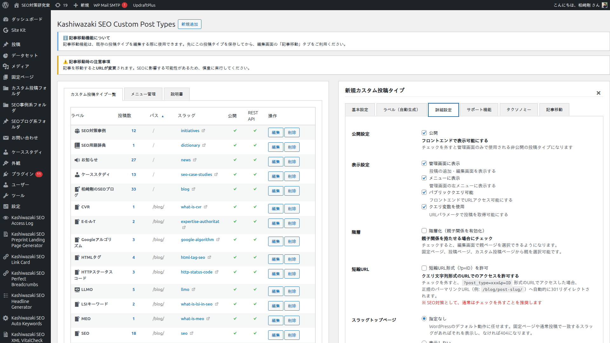

階層 URL 設計
本プラグインの中核機能。親ディレクトリ、親ページ選択、階層 URL の解決ロジック、アーカイブ表示制御の 4 モード、子階層を含むアーカイブ、旧スラッグ追跡、パーマリンク検証までを一括解説します。テーマ → サブトピック → 個別記事という意味的階層をサイト構造として設計するための機能群です。
なぜ階層 URL が SEO と GEO で意味を持つのか
WordPress 標準のカスタム投稿タイプは /{slug}/{post_name}/ という単純な 2 階層構造しか持てません。これではサイト内のテーマの包含関係（「SEO というテーマの中の、技術的施策の中の、内部リンク戦略について」のような階層）を URL で表現できません。
ただし、SEO（検索エンジン最適化）と GEO（生成エンジン最適化 / AI 検索最適化）では、URL 階層の意味する役割が少し異なります。
| 観点 | URL 階層の機能的な貢献 |
|---|---|
| SEO（検索エンジン / ユーザー） | 検索エンジンのクローラーがサイト構造を把握する手がかり、ユーザーがパンくずやアドレスバーからコンテンツの位置関係を理解する助けになる。直接的な順位要因ではないが、内部リンク構造や重複排除などと組み合わせて評価される。 |
| GEO / LLMO（AI 検索） | AI がサブトピックを横断して引用する際に、同じサイト配下の関連コンテンツを辿りやすくなる。過去に参照された URL の到達性を維持する仕組み（canonical 制御、旧スラッグ追跡）と組み合わせることで、AI が引用した URL に継続してアクセスできる状態を保ちやすい。 |
本プラグインは、親ディレクトリと公開 URL スラッグを組み合わせることで、以下のような意味階層を持つ URL を構築できます。
| URL の例 | 意味 |
|---|---|
/seo/ | SEO というメインテーマのトップ（固定ページ or アーカイブ） |
/seo/internal-link-strategy/ | SEO 配下のサブトピック「内部リンク戦略」のアーカイブ（スラッグトップページ設定に従う） |
/seo/internal-link-strategy/anchor-text-optimization/ | 「内部リンク戦略」配下の個別記事「アンカーテキスト最適化」 |
このような URL 階層は、検索エンジンとサイト訪問者の両方に対して、コンテンツの論理的な包含関係を視覚的に伝えます。構造的セマンティック・サチュレーション型の情報設計（特定のテーマについて意味空間を網羅していくアプローチ。詳細は概要ページ参照）を WordPress 上で実装する際の基盤となります。
内部スラッグと公開 URL スラッグの分離
本プラグインの最重要設計のひとつが、内部スラッグ（slug）と公開 URL スラッグ（url_slug）の分離です。
| 識別子 | 役割 | 制限 |
|---|---|---|
内部スラッグ slug | WordPress のシステム内部識別子。register_post_type() の第1引数。$wp_post_types グローバルのキー。データベース上の post_type フィールドの値。 | 半角英数字、最大 20 文字（WordPress コアの制限） |
公開 URL スラッグ url_slug | 実際のフロントエンド URL に表示される文字列。SEO キーワードを含む長い文字列を使える。 | 半角英数字・ハイフン・アンダースコア、最大 64 文字（本プラグイン独自の拡張） |
例えば、「SEO 関連の最新ニュース記事」を扱う投稿タイプを作る場合:
- 内部スラッグ:
seo_news（短く、システム的、20 文字以内） - 公開 URL スラッグ:
seo-latest-news-and-trends（長く、SEO キーワード重視、64 文字まで） - 結果の URL:
/seo-latest-news-and-trends/article-slug/
このとき本プラグインは、内部的に register_post_type('seo_news', ...) として WordPress に登録しつつ、add_rewrite_rule() でカスタムリライトルールを追加し、URL /seo-latest-news-and-trends/... へのアクセスを ?post_type=seo_news&name=... に変換します。
SEO キーワードを URL に含める価値
検索エンジンのクローラーやユーザーは、URL に含まれるキーワードをページ内容理解の手がかりにする場合があります。WordPress 標準の 20 文字制限では「seo-news」程度しか入りませんが、本プラグインの 64 文字対応では「seo-latest-news-and-trends-2026」のような具体的なキーワードを URL に含められます。これが CTR やクロール効率に寄与する可能性はありますが、断定できる効果ではなく、本文品質やメタデータなど他の要素との組み合わせで評価されます。
親ディレクトリの設定（parent_directory）
カスタム投稿タイプの「詳細設定」タブで 「親ディレクトリ」 欄に親となる固定ページや別の CPT のスラッグを指定すると、その配下の URL 構造になります。

| 親ディレクトリ設定 | 結果の URL 構造 |
|---|---|
| 未設定 | /{url_slug}/{post_name}/ |
seo を指定 | /seo/{url_slug}/{post_name}/ |
blog/category/seo を指定（多段） | /blog/category/seo/{url_slug}/{post_name}/ |
build_full_path() による多段パス解決
親ディレクトリが他のカスタム投稿タイプを指している場合（CPT → CPT 親子関係）、build_full_path() が再帰的に CPT の親子チェーンをたどって完全なパスを構築します。
一方、親ディレクトリに固定ページを指定した場合は、WordPress の get_page_uri() で得られる固定ページのフルパス（例: /parent-page/child-page/）が parent_directory カラムにそのまま保存され、CPT 側の再帰解決は走りません（固定ページの階層は WordPress コアが管理しているため）。
いずれの場合でも、WordPress コアの canonical redirect は本プラグインの対象 CPT に対して無効化され、構築した階層 URL がそのまま正規 URL として使われます。
親ページ選択メタボックス
投稿の編集画面を開くと、右サイドバーに 「親ページ選択 & スラッグ編集」 メタボックスが表示されます。ここで個別の投稿に対して親ページを指定できます。
2 種類の親子関係
| 親子関係の種類 | 使い方 |
|---|---|
同じ投稿タイプ内の親子（post_parent） | 投稿タイプの「階層構造」を ON にすると有効。固定ページのように、同型投稿同士で親子関係を持てる。WordPress 標準の階層機能を使用。 |
異なる投稿タイプとの親子（_kstb_parent_page メタ） | 固定ページや別の CPT を親にできる。本プラグイン独自の仕組み。例: 固定ページ「SEO」を親にして、カスタム投稿タイプ「事例紹介」を配置する。 |
親ページの検索（AJAX インクリメンタル）
親ページ選択メタボックス内の検索欄に 2 文字以上を入力すると、AJAX で固定ページや投稿が即座に検索され、候補が表示されます。タイトルでフィルタリング可能です。
v1.0.25 の改善
v1.0.25 で、親ページ選択時の post_name / post_parent の更新が $wpdb->update() 直接書き込みから wp_update_post() 経由に変更されました。これにより WordPress 標準のスラッグ一意化、親子循環チェック、save_post / post_updated フックが正しく実行されるようになり、自分自身を親にしたり子孫を親にする不正な状態が防止されるようになりました。
階層 URL のリクエスト解決ロジック
フロントエンドで /seo/internal-link-strategy/anchor-text-optimization/ のような階層 URL にアクセスがあったとき、本プラグインは以下の流れで処理します。
カスタムリライトルールのマッチ - register_single_post_type() 内で登録された add_rewrite_rule() により、URL ^seo/internal-link-strategy/([^/]+)/?$ が ?post_type={internal_slug}&name=$matches[1] に変換される。
request フィルタの解決 - KSTB_Post_Type_Registrar::resolve_hierarchical_request() が WordPress の request フィルタで階層 URL を解析し、適切な投稿タイプとスラッグに変換する。階層情報の伝達に必要なクエリ変数（kstb_parent_slug など）は、リライトルール側で別途追加されている。
パーマリンク検証 - KSTB_Permalink_Validator がアクセスされた URL が当該投稿の正しい canonical URL かをチェック。不正な親パス経由なら 404 を返す（重複コンテンツの防止）。
canonical redirect の無効化 - WordPress 標準の正規化リダイレクトは本プラグインの階層 URL を意図せず短い形式に redirect しようとするため、対象 CPT に対しては無効化される。
get_permalink() の出力書き換え - post_type_link フィルタ（KSTB_Post_Type_Registrar::hierarchical_post_type_link() メソッド）により、テンプレート内の get_permalink() が階層 URL を返すよう書き換えられる。
アーカイブ表示制御の 4 モード
「詳細設定」タブの 「スラッグトップページ」 設定で、投稿タイプアーカイブの URL（/{url_slug}/）にアクセスされたときの動作を 4 モードから選択できます。
| モード | 動作 | 使い分け |
|---|---|---|
default（指定なし） | アーカイブ URL に一致するパスの固定ページや通常投稿があればそれを表示、なければ 404。WordPress 標準のアーカイブテンプレートを強制表示するわけではない。 | WordPress 標準の挙動を保ちたい場合、あるいは同名の固定ページを fallback として使いたい場合。 |
post_list（投稿リスト） | 投稿タイプの記事一覧を強制的にアーカイブテンプレートで表示。 | 常に投稿一覧を表示したい場合。最も一般的な選択。 |
custom_page（固定ページ） | 指定した固定ページの内容をアーカイブ URL で表示。アーカイブ自体は記事一覧ではなく、テーマのハブページとして使える。 | テーマ全体の解説ページや LP として使いたい場合。SEO/GEO のハブページ戦略に有効。 |
none（表示しない） | アーカイブを完全に無効化。アーカイブ URL にアクセスすると強制 404（固定ページ fallback もしない）。 | カスタム投稿タイプのアーカイブを使わず、完全にアクセス不能にしたい場合。 |
テーマ・ハブページ戦略のヒント
custom_page モードでは、アーカイブ URL（/seo/ 等）に「SEO 全体の概要を解説する固定ページ」を割り当てつつ、配下のサブトピック CPT 記事は /seo/internal-link-strategy/... のように展開できます。「テーマトップ → サブトピック → 個別記事」という構造的セマンティック・サチュレーション型の情報設計を URL 構造として表現するための選択肢のひとつになります。
子階層を含むアーカイブ（archive_include_children）
「アーカイブを含む」設定で 「子階層の投稿タイプの記事も含める」 をチェックすると、親階層のアーカイブが配下のサブトピック CPT の記事を自動的に含めて表示します。
例: 「SEO」アーカイブを開くと、「SEO/internal-link-strategy/」「SEO/keyword-research/」など配下のすべての CPT 記事が一覧表示されます。これにより、親階層のアーカイブが「テーマに関するコンテンツのハブ」として機能します。
技術的な仕組み
KSTB_Archive_Controller::get_child_post_type_slugs() が再帰的に子階層 CPT を収集し、投稿タイプアーカイブ（is_post_type_archive()）のメインクエリで post_type を配列に置き換えます。対応範囲は投稿タイプアーカイブのメインクエリが中心で、検索結果やフィードへ自動的に反映される機能は実装されていません（それらで子階層 CPT を含めたい場合は別途実装が必要です）。この機能は archive_display_type が post_list のときのみ有効です（v1.0.21 以降）。
旧スラッグ追跡（301 リダイレクト対応）
WordPress コアは、階層構造を持つ投稿タイプ（hierarchical=true）に対して _wp_old_slug メタ（旧スラッグの履歴）を保存しません。これは固定ページとカスタム投稿タイプの階層的な扱いの違いに起因する、コアの仕様上の制限です。
本プラグインの KSTB_Old_Slug_Tracker は、この欠落を補完し、階層的 CPT の 個別投稿のスラッグ（post_name） が変更されたときに _wp_old_slug を自動保存します。これにより、WordPress 標準の wp_old_slug_redirect() が動作し、旧 URL から新 URL への 301 リダイレクトが成立するようになります。
補足: 対応範囲の限定
この旧スラッグ追跡は「個別投稿の post_name 変更」のみに反応します。投稿タイプ自体の url_slug（公開 URL スラッグ）の変更や、parent_directory（親ディレクトリ）の変更によって URL 構造が変わる場合は、この機能だけでは旧 URL からの到達性は担保されません。その場合は Redirection などの別リダイレクトプラグインや .htaccess での対応が必要です。
個別投稿スラッグ変更時の URL 到達性
個別投稿のスラッグを変更した際、この旧スラッグ追跡機能により、旧 URL は 301 リダイレクトで新 URL に転送されます。過去の URL の到達性を維持する助けになる機能です（検索エンジンの再評価や順位への影響は検索エンジンの判断によります）。
パーマリンク検証（不正な親経由を 404）
例えば、本来 /seo/internal-link-strategy/article/ でアクセスされるべき記事に対し、誰かが /blog/internal-link-strategy/article/ という不正な親パスでアクセスしてきた場合、本プラグインの KSTB_Permalink_Validator は 404 を返します。これは以下の目的があります。
- 重複コンテンツの防止 - 同じ記事が複数の URL で表示されると、検索エンジンが評価を分散させてしまう。
- 意図的なリダイレクトループの回避 - WordPress 標準の canonical redirect が誤って動作するケースを防ぐ。
- URL 構造の一貫性の維持 - 親ディレクトリの設定通りの URL のみを正規 URL として扱う。
セマンティック・サチュレーション型情報設計との対応
本プラグインの階層 URL 機能群を組み合わせると、特定のテーマについて意味空間を網羅する情報設計を以下のように実装できます。
| 設計の段階 | 具体的な操作 |
|---|---|
| ① テーマトップを置く | 固定ページで「SEO」を作成し、URL を /seo/ にする。テーマの全体像と目次を記述。 |
| ② サブトピックを CPT として作る | カスタム投稿タイプ「内部リンク戦略」を作成。親ディレクトリに seo を指定し、URL スラッグを internal-link-strategy にする。 |
| ③ アーカイブをハブ化する | サブトピックの「スラッグトップページ」を custom_page モードにし、サブトピック解説ページを割り当てる。あるいは post_list + archive_include_children で配下記事を一覧化する。 |
| ④ 個別記事を縦深掘り | サブトピック配下に個別記事（/seo/internal-link-strategy/anchor-text/ など）を作成。サブトピックでの潜在ニーズまで網羅。 |
| ⑤ 親テーマアーカイブで網羅性を可視化 | 「SEO」テーマトップで、配下のサブトピック CPT 記事を archive_include_children で集約表示。テーマ全体のコンテンツ網羅性を可視化。 |
| ⑥ URL の到達性を維持 | 個別投稿の post_name 変更時は旧スラッグ追跡で自動 301 リダイレクトが働く。ただし url_slug（公開 URL スラッグ）や parent_directory の変更で URL 構造自体が変わる場合は、Redirection など別のリダイレクト手段で補う必要がある。 |
構造化データは別途必要
本プラグインは BreadcrumbList や Article などの JSON-LD 構造化データを出力しません。階層 URL とパンくずリストの構造化データを検索エンジンに明示的に伝えるには、対応するテーマや SEO プラグイン（Yoast SEO、Rank Math、SEO SIMPLE PACK など）の併用が推奨されます。